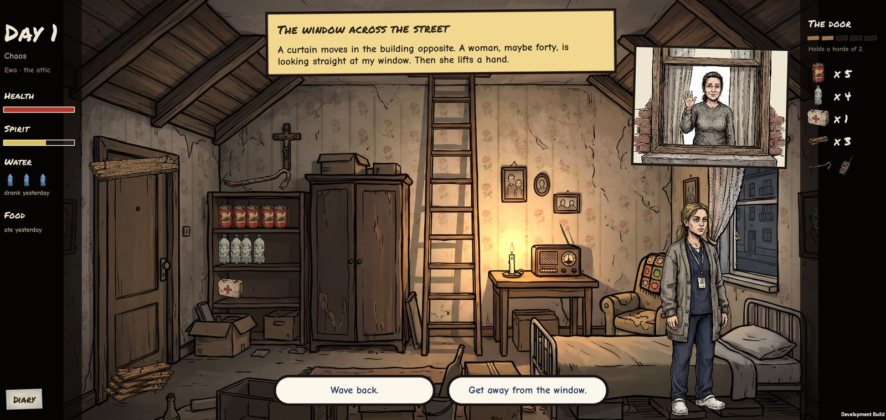
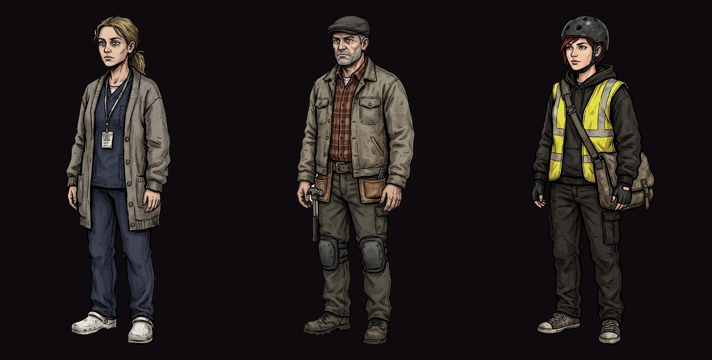

Dead Weight
Twenty days in an attic at the end of the world. The door is nailed shut, the ladder to the roof is pulled up, and everything you own is on one shelf. Every choice you make is a dice throw you never see. You can tilt the odds. You can never be sure.

I wanted a game I can’t predict
I have always liked the end of the world. Not the explosions — the after. Empty streets, rationed water, a radio that slowly stops talking, and the quiet question of what you’d actually do. Post-apocalyptic stories are about small decisions with huge weight: open the door or keep it shut, share the food or hide it.
I also wanted to explore text and choice-based games, where the story is the game and every line has to earn its place. And I wanted dice in it. Not a puzzle with a right answer you can look up, but a roll you can only lean on, so no two runs go the same way.
That combination turns out to be cruel in the best way. In a world where a scratch can kill you and a bottle of water is a fortune, chance stops being a game mechanic and becomes the whole problem. You did everything right, and the soldier still fired.
Every choice is a throw you never see
You see “risky”, never the odds. Twenty-seven of the game’s seventy-eight choices roll a hidden die. Each has a base chance, and the run moves it: a crowbar helps you pry a door, two days without water hurt every roll you make, a bite you are hiding hurts more. The chance is always kept between 5% and 95%. Nothing is ever certain, and nothing is ever hopeless.
The world has secrets from the first morning. The woman across the street is honest, or bait for the men in her stairwell, or bitten and hiding it. The run decides which before you ever see her, and the game only tells you at the end. The same choice — let her in — saves one run and ends another.
Bodies are not hit points. The third day without water kills you. Food takes about three weeks, but hunger makes you weak within days, and weak people lose their rolls. A wound can be dressed. A bite cannot: you get one last day, and you choose what it’s for.
Playing it safe is a trap. Every safe option costs something quiet: morale, a day of water, a chance that won’t come back. To check the balance, bots play thousands of runs after every change. A bot that takes random choices survives about a third of the time with each of the three survivors. One that always plays it safe mostly dies of thirst before day twenty.
Who’s in the attic?
Ewa, a night-shift nurse, came to her father’s flat when the hospital stopped answering. Marek, a carpenter, was turning an attic into a studio for a client who never came back. Ola, a bike courier, ran up the stairs instead of down when the street filled with screaming. Each has their own flat, their own story events and their own strengths: Ewa reads wounds and bites, Marek builds, Ola runs and climbs.
Their flats fall apart with the city, in four stages from a tidy home on day one to a wreck by the end, and the survivors change with them: worn, injured, or bitten.

A room is not a screen with paper on it
The first version was boring, and I said so. It had the rules and the dice, and you read it all off a diary page that covered half the room. So the room became the stage: the survivor stands in it and walks to the window when something happens outside, their thoughts are speech bubbles, the radio talks from the table, and in the morning you tap the shelf to eat and the door to nail another plank.
The window is the television. Soldiers and people running in the first days, then the dead, then scavengers with rifles, and the burnt-out Humvee that stays below the window from day ten. The city falls apart where you can see it.
The rules are one small, pure library. Every run is a seed plus the list of what you did, so a save is just that list, replayed, and a future server could check any run the same way. A self-check on the phone proves it rolls exactly what the tests roll.
The art is generated, then built into a world. The comic-book look comes from images I generated with Gemini from my own prompts. Scripts cut them out, and the game lights them: a candle that flickers, rain and lightning on the glass, the night turning everything blue.